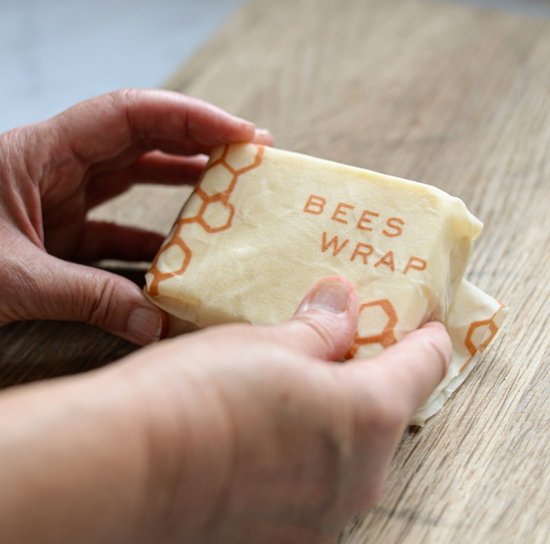

Beeswax wraps are pieces of cotton fabric infused with beeswax, pine resin, and jojoba oil. They replace plastic wrap for covering bowls, wrapping cheese, folding around sandwiches, and sealing cut produce. They're washable, reusable for up to a year, and compostable at the end of their life. One batch, one afternoon, one less roll of plastic in the landfill.

The method is simple enough that you can make your first wrap in about twenty minutes of active time. The ingredients — beeswax, pine resin, and jojoba oil — are available online or at natural food stores. A one-pound bag of beeswax pellets costs about ten dollars and will make dozens of wraps.
Why three ingredients — and what each one does
You can't just melt beeswax onto cloth and call it done. A plain beeswax coating gives you a stiff, non-sticky piece of fabric. Each ingredient has a job:
- Beeswax makes the fabric water-resistant and gives it body. Without it, you have oily cloth. It's the backbone of the wrap.
- Pine resin gives the wrap its cling. This is the ingredient people skip — and then wonder why their wraps don't stick to anything. Food-grade pine resin powder is what lets the wrap grip onto bowl edges and seal to itself.
- Jojoba oil keeps the wrap flexible. Beeswax alone is brittle and will crack when you fold it. A small amount of jojoba oil — a teaspoon or two per wrap — keeps the coating supple without feeling greasy. Jojoba is used because it doesn't go rancid at room temperature. Don't substitute olive oil or coconut oil; they'll spoil and your wraps will smell off within weeks.
The ratio per wrap is roughly two parts beeswax to one part pine resin, plus a drizzle of jojoba oil. For a 12-by-12-inch wrap — the most useful size — that's about two tablespoons of beeswax pellets, one tablespoon of pine resin powder, and a teaspoon of jojoba oil.
How to make them: the oven method
This is the simplest way. No sewing, no double boiler, no special tools. You need an old baking sheet, parchment paper, a paintbrush you'll never use for painting again, and an oven set to its lowest temperature — 200°F on most ovens.
- Prep the fabric. Wash and dry 100% cotton fabric first — it'll shrink slightly, and you want that to happen before the wax goes on. Cut into squares with pinking shears if you have them; the zigzag edge reduces fraying. Good sizes: 8×8 inches for small bowls, 12×12 for medium, 14×14 for large.
- Set up your pan. Line an old baking sheet with parchment paper. Don't skip this — melted wax will bond to your pan. Lay the fabric flat and smooth out wrinkles. Sprinkle beeswax pellets and pine resin powder evenly across the fabric. Drizzle jojoba oil over the top.
- Melt in the oven. Place the pan in a 200°F oven. Check every five minutes. The wax melts in ten to fifteen minutes — you'll know it's ready when the fabric looks fully wet and saturated.
- Spread and set. Pull the pan out. Use the paintbrush to spread any unmelted bits and even out the coating — work quickly, it starts setting in under a minute. Lift the fabric off the parchment with tongs or your fingers (careful — it's hot) and wave it gently in the air for ten to fifteen seconds. It'll cool and stiffen almost immediately. Lay it flat on a drying rack and it's ready to use in about five minutes.
Make a few extras while you're set up — the process is the same whether you're making one wrap or six, and having spares means you can rotate them through the wash.
The Beeswax Wraps at Home guide includes the full ingredient ratios for different wrap sizes, step-by-step instructions with photos, care and washing guidance, how to re-coat old wraps, and an honest list of what beeswax wraps will and won't do — so you know before you make them.
Beeswax Wraps at Home on Etsy →